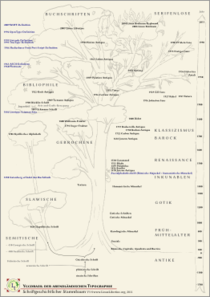

Our Web fonts

- Webfonts
In our Webfonts folder you can always find our latest webfont files in Web Open Font Format ( WOFF). WOFF has specifically been invented for embedding fonts with web pages. Please copy these fonts into your webspace and link them via CSS. Note: Linking from external URLs is not accepted by every browser.
WOFF). WOFF has specifically been invented for embedding fonts with web pages. Please copy these fonts into your webspace and link them via CSS. Note: Linking from external URLs is not accepted by every browser.
LaTeX
History of Typographie
- 
- Yggdrasil of Type History
This is our Tree of the history of occidental Fonts. You can download the PDF here and print it if you like.
How does this affect me?
To put it in a nutshell: You are allowed to modify the fonts if you publish the resulting files under the same license again. The font name should be changed (please have a look at the license).
I know the GPL but what’s the use of the Font-Exception?
If you take the GPL by its word it would have the following funky effect. If you embed the GPL-Font into let’s say a PDF-file you would have to publish the PDF under the GPL, too. To avoid any judicial conflicts the Free Software Foundation (FSF) has written an an exeption clause. This is the so-called “Font-Exception”. The OFL has been written specifically for fonts. Further information on the Licenses can be found here: (License-Text, Wikipedia: GPL) und zur OFL (License-Text, Wikipedia: OFL).
Get Font Files
Which packages shall I download?
- “TTF” in file name
contains the fonts in MS TrueType-format. Best choice for use on screen. - “OTF” in file name
contains the fonts in Adobe OTF(CFF)-format. Best choice for printing. Perhaps best and smallest font format at all. - “WOFF” in file name
contains webfonts for use in websites. If you don’t have a website this package isn’t interesting for you. - „SRC“ in the file name
this package contains the source files of Libertine and Biolinum in SFD format.
Installation:
Windows: Unzip the package and copy fonts into folder C:\windows\fonts.
Linux: Unzip the package and install the fonts with the help of your desktop control app, such as KDE-Kontrol.
Naming convention of the font files
Our fonts are available in various different styles. The following table describes the naming convention of the font files.
| ! | Base | Weight | Substyle | Deco | internal Font Name |
| R | Regular | ||||
| B | Bold | ||||
| I | Italic | ||||
| Z | Semibold | ||||
| C | Condensed (not yet available) | ||||
| K | Keyboard Style | ||||
| a | automatically generated by script (no manual correction) can also be understood as “alpha” | ||||
| L | Slanted | ||||
| W | Shadow | ||||
| U | Outline | ||||
| S | SmallCaps |
Example: LinLibertine_RBI.otf is the Bold Italic style to the base font LinuxLibertine.
Known Problems
- Under SuSE-10.0 and 10.1 the kerning information is sometimes not available. This is a SuSE-Bug which also affects other fonts, too! In OpenSuSE-10.2 this problem is fixed.
- We used to provide also *.dfont-files that that people could use on their Macintosh-System if it didn’t like our TTFs (which is not our fault, because Apple’s TTF-conventions differ from MS/Adobe’s ones), but lately OS-X seems to have evolved positively.
- Since summer 2007 there seemed to have been a more or less linux wide change of the font management. Since then the Underlined of Libertine is shown instead of the Regular and the Regular isn’t available anymore. There are two possibilities to avoid this fault. You can either download version 2.7 (or newer) or delete the Underlined from your system. The problem doens’t exist on Windows.
- Programs that base on the Pango library show ligatures automaticly and exaggerate kerning.